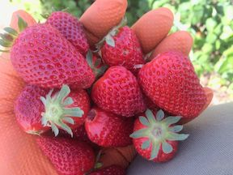
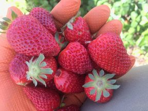

¿Quienes somos? | Horticurita
Somos un grupo de autónomos enfocados en cultivar productos de terreno de alta calidad ofreciendo precios altamente competitivos a nuestros clientes.En horticurita.es no utilizamos abonos artificiales para el cultivo de fruta , verdura y hortalizas .

Calidad
En horticurita nos esforzamos por que nuestros clientes tengan un producto de alta calidad.Cultivamos productos de terreno como se ha cultivado toda la vida sin usar abonos artificiales o alteraciones de producto. Te comes un producto de verdad , con sabor de auténtico.

 
